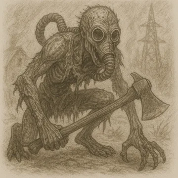
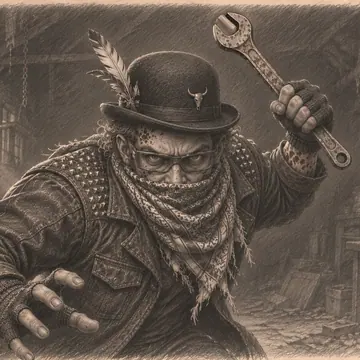
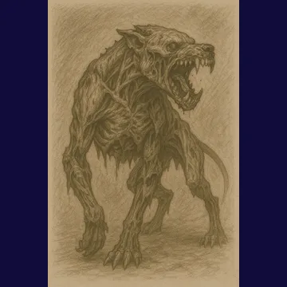
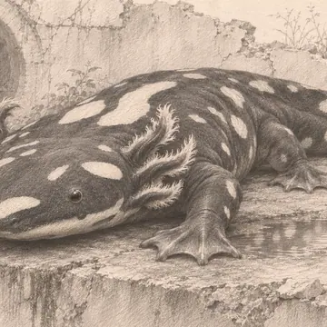

Бестиарий Европейской Пустоши
Библиотека Зелёной Зоны Олегус
Монстры
Из бестиария Европейской Пустоши. Составитель и иллюстратор — Семён фон Кройц, криптолог Зелёной Зоны Олегус.
Железный Червь
 Агрессивность: максимальная
Опасность: средняя
Агрессивность: максимальная
Опасность: средняя
Ареал обитания: Военные и складские базы
Чёрный мутант

Агрессивность: средняя
Опасность: высокая
Ареал обитания: Закрытые комплексы, места, пораженные чёрным мором или чёрной гнилью.
Гнилец

Агрессивность: варьируется
Опасность: высокая
Ареал обитания: Заброшенные комплексы и руины в районах, поражённых Чёрной гнилью.
Механизированный солдат
 Агрессивность: варьируется
Опасность: крайне высокая
Агрессивность: варьируется
Опасность: крайне высокая
Ареал обитания: Везде на территории Европейской Пустоши.
Дэми-пёс

Агрессивность: высокая
Опасность: высокая
Ареал обитания: Везде на территории Европейской Пустоши
Маячник

Агрессивность: варьируется
Опасность: низкая
Ареал обитания: Затопленные подвалы, дренажные тоннели и отстойники Европейской Пустоши.